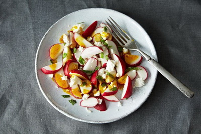

Рецепт цього салату простий, але вся магія смаку в його заправці. На 4 порції вам потрібно:
Для заправки:
Приготування:
Порізаний редис викладаємо в салатницю, змішуємо з сиром фета і м’ятою. Тепер приготуємо заправку: сік вилити в невелику каструльку або сковороду, поставити на середній вогонь і довести до кипіння. Варити його хвилин 8-10, а потім змішати з каррі і оливковою олією. Вилити в соусник і дати охолонути.
Заправляти салат при подачі.